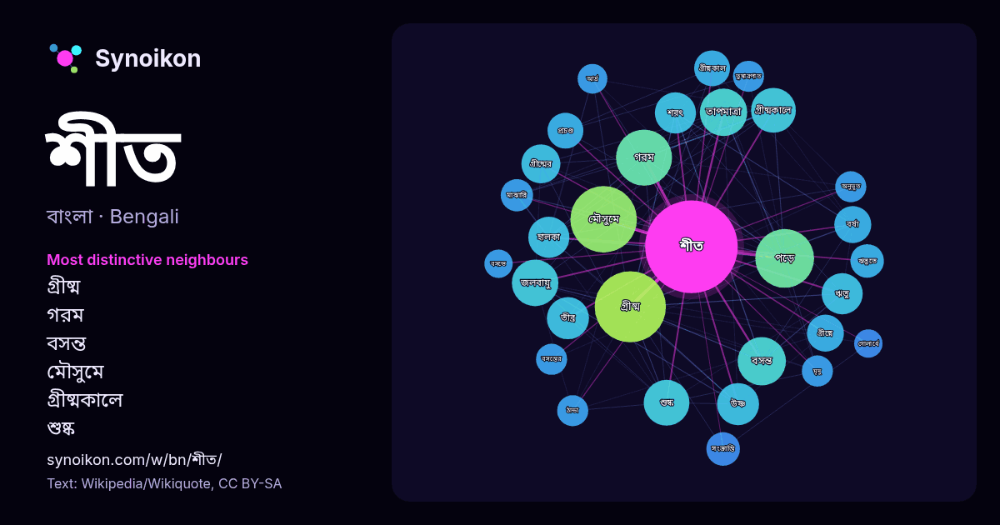

বাংলা · আজকের শব্দের তালিকা
শীত
“winter” · উইকিপিডিয়া, Wikiquote থেকে 648টি প্রয়োগে এর চারপাশে পাওয়া শব্দ।

সবচেয়ে স্বতন্ত্র প্রতিবেশী
- গ্রীষ্ম 58×
- গরম 32×
- বসন্ত 27×
- মৌসুমে 24×
- গ্রীষ্মকালে 24×
- শুষ্ক 22×
- শরৎ 21×
- ঋতু 20×
- জলবায়ু 20×
- তাপমাত্রা 19×
- উষ্ণ 19×
- গ্রীষ্মের 18×
- বর্ষা 17×
- তীব্র 16×
- গ্রীষ্মকাল 16×
- গ্রীষ্মে 16×
- হালকা 16×
- পড়ে 15×
- সংক্রান্তি 15×
- প্রচণ্ড 14×
× = সাধারণ উইকিপিডিয়া টেক্সটের চেয়ে কত গুণ বেশি।
সবচেয়ে ঘন ঘন প্রতিবেশী
- গ্রীষ্ম 63
- মৌসুমে 55
- পড়ে 43
- গরম 39
- বসন্ত 29
- তাপমাত্রা 28
- জলবায়ু 27
- শুষ্ক 26
- গ্রীষ্মকালে 25
- উষ্ণ 22
- তীব্র 22
- ঋতু 21
- শরৎ 21
- হালকা 21
- গ্রীষ্মের 19
- অঞ্চলে 18
- গ্রীষ্মে 17
- বর্ষা 17
- সময় 17
- গ্রীষ্মকাল 16
প্রসঙ্গে
- উপস্থিতি পরিবেশগত শীত থেকে পূর্ববর্তী ঋতুতে পরিবর্তনকে চিহ্নিত করতে পারে। শীতের কঠোরতা থেকে বাঁচার জন্য, অনেক প্রাণী অতিরিক্ত শীতের জন্য বিভিন্ন আচরণগত Wikipedia snippets · শীত
- আরব শীত আরব দেশগুলিতে আরব বসন্তের বিক্ষোভের পরবর্তীতে কর্তৃত্ববাদ, নিরঙ্কুশ রাজতন্ত্র এবং ইসলামী চরমপন্থা পুনরুত্থানের জন্য একটি শব্দ। আরব শীত শব্দটি সিরীয় Wikipedia snippets · আরব শীত
- এসেছে মঘা নক্ষত্রে সূর্যের অবস্থান থেকে। পৌষ এবং মাঘ এই ২ মাস মিলে শীত কাল। শীতের সমাপ্তি। সিজারীয় বর্ষপঞ্জী অনুযায়ী জানুয়ারি মাসের মধ্য ভাগ থেকে ফেব্রুয়ারি Wikipedia snippets · মাঘ
- বৎসরের ঋতু বিভাজন করা হয়। বিশ্বের অধিকাংশ দেশে বসন্ত, গ্রীষ্ম, হেমন্ত ও শীত- এই চারটি প্রধান ঋতু দেখা যায়। কিছু দেশের জনগণ ঋতুকে আরো কয়েকভাগে বিভক্ত Wikipedia snippets · ঋতু
- টিকে রয়েছে বংশী নদীকে কেন্দ্র করেই। সাভারে বংশী নদীতে নৌযান চলাচলের দৃশ্য শীত ঋতুতে বংশী নদীর দৃশ্য মধুপর শহরের সেতু থেকে তোলা বংশী নদীর দৃশ্য। সাভার পৌর Wikipedia snippets · বংশী নদী
- মৌসুমী বায়ু প্রবেশ করে। একেই বলে মৌসুমী বায়ুর আগমন বা গ্রীষ্ম মৌসুমী। *শীত মৌসুমী:-------- শীতকালের স্থলভাগ দ্রুত তাপ বিকিরণে শীতল হয় এবং সমুদ্র তুলনামূলক Wikipedia snippets · মৌসুমি বায়ু
- (অধিবর্ষে ৭৩ দিন) বাকি রয়েছে। প্রাচীন কাল থেকেই একটা কথা প্রচলিত, মাঘের শীত বাঘের গায়। ১৯৩৩ইং - জার্মানীর চ্যান্সেলর হিসেবে এডলফ হিটলারের আরোহণ। ১৯৬৪ইং Wikipedia snippets · ১৭ মাঘ
- রাজা বলা হয়। ফাল্গুন এবং চৈত্র মাস মিলে হয় বসন্ত ঋতু। বসন্ত ঋতুর আগমন ঘটে শীত চলে যাবার পর এবং গ্রীষ্ম আসার আগে। গ্রীষ্মমণ্ডলীয় এলাকায় তাপমাত্রা বাড়তে Wikipedia snippets · বসন্ত
আরও শব্দ
- অরণ্য
- আয়না
- ইতিহাস
- ঈশ্বর
- কাজ
- কুকুর
- ক্ষমতা
- খাদ্য
- গান
- গ্রীষ্ম
- ঘড়ি
- ঘণ্টা
- ঘোড়া
- ছায়া
- জননী
- জলবায়ু
- জীবন
- ঝড়
- টাকা
- ট্রেন
- দারুচিনি
- দ্বীপ
- নক্ষত্র
- নীরবতা
- পরিবার
- পানি
- পাহাড়
- প্রকৃতি
- বাগান
- বিজ্ঞান
- বিড়াল
- বৃষ্টি
- ভাষা
- মধু
- মরুভূমি
- মানচিত্র
- মৃত্যু
- রাস্তা
- রুটি
- লবণ
- শরৎ
- শহর
- শিল্প
- সত্য
- সময়
- সেতু
- সোনা
- স্বাস্থ্য
- হৃদয়
2026-10-09 তারিখে ডিফল্ট সেটিংসে (±5 শব্দ, মাঝারি কর্পাস) আগে থেকে গণনা করা। ইন্টারঅ্যাক্টিভ মানচিত্র লাইভ ডেটা দিয়ে এটি হালনাগাদ করতে পারে।
যন্ত্রে অনূদিত ইন্টারফেস; সংশোধন স্বাগত।